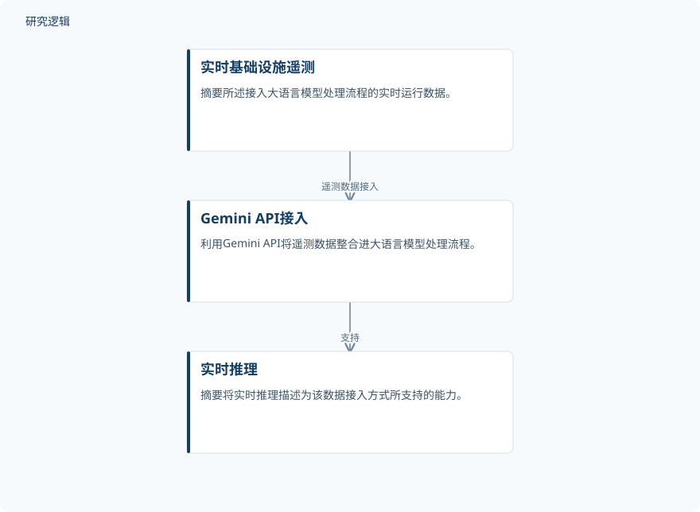

摘要解读
融合物联网与数字孪生的智慧商业基础设施人工智能节能优化
AI-Enabled Intelligent Energy Optimisation for Smart Commercial Infrastructure Using IoT and Digital Twin Technologies
解读更新 2026-10-31 09:36 · 依据公开摘要整理，未核验全文细节
商业设施如何从被动处理能耗问题，转向利用实时数据辅助运行决策？EcoMind将物联网遥测、数字孪生与大语言模型结合，为理解智能运维中的数据接入、状态分析与节能优化提供了一个具体案例。
文章目录
商业设施为何需要预测型能源管理
城市化与商业设施能耗增长，是这项研究的问题背景。摘要将传统楼宇管理系统（BMS）的不足概括为被动响应、缺少预测和自动化能力，以及缺乏人工智能决策支持。EcoMind试图回应的，不只是如何展示设备数据，而是如何让运行信息参与能源管理与决策。
EcoMind：把遥测数据接入分析与对话
EcoMind采用云原生实现，整合物联网遥测模拟、预测分析、数字孪生监测、可持续性评估和基于遥测的对话式人工智能模块。摘要列出的分析对象包括暖通空调、照明、电梯、自动扶梯、停车系统及环境传感器数据；对应机制包括异常检测、预测性维护、占用感知和基于规则的优化。
作者强调的技术特点，是通过Gemini API将实时基础设施遥测数据接入大语言模型处理流程，以支持不依赖静态数据集的实时推理。需要注意，摘要同时提到“遥测模拟”与“实时遥测”，但没有交代二者在实验中的具体关系，不能直接将其理解为已经完成真实商业设施的现场部署。
依据摘要整理的遥测推理流程


仅示意摘要明确描述的实时遥测接入与推理关系，不代表论文原图，也不补充实验配置或控制执行环节。
下载 SVG图示关系说明
实线表示相邻阶段的信息流，虚线表示跨阶段联系或反馈。
实时基础设施遥测 → Gemini API接入：遥测数据接入；Gemini API接入 → 实时推理：支持
摘要报告节能与异常响应改善
摘要报告，实验中总能耗有所下降，异常检测响应和运行决策也得到改善。这里的总能耗有明确口径：涵盖暖通空调、照明、电梯、自动扶梯和停车系统，而非笼统代表设施内全部能源消耗。对于异常响应和决策改善，摘要没有给出具体评价指标或幅度。
摘要还定义了占用率、异常偏差和优化效率：分别对应实际占用与最大占用之比、当前传感器读数与历史正常行为之差，以及优化后能耗减少量与总能耗之比。这些定义有助于理解系统关注什么，但仅凭摘要尚不能还原各项指标的具体计算与比较过程。
节能结论的比较条件仍需查证
本解读仅依据所提供的完整摘要，未阅读全文。摘要未说明设施或样本规模、观测时长、比较基线、重复验证方式，也未明确模拟数据与现场数据各自承担的验证范围。因此，尚不能判断节能表现能否跨设施复现，或将整体改善归因于数字孪生、大语言模型及规则优化中的某一部分；这些是摘要的信息边界，不代表论文没有开展相关工作。
阅读启发：区分数据接入与决策贡献
阅读启发：这项工作值得继续追问的是，实时遥测进入对话模块后，究竟如何影响运维判断，以及预测性维护与规则优化如何分工。进一步阅读时，可重点查找数据来源、优化动作、比较基线及决策质量的评价依据，以区分“能够基于数据回答问题”与“已经验证能够改善运行”这两类不同证据。
以上为本站阅读启发与建议，不是论文已验证的结论。